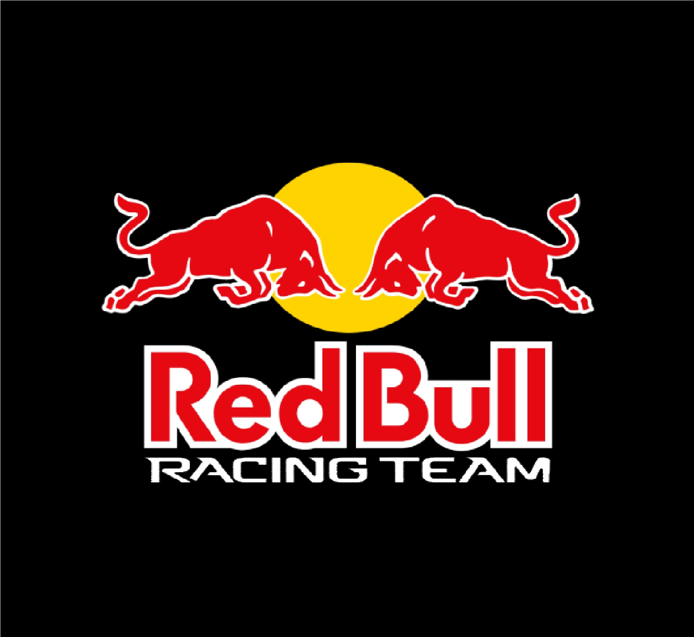

Red Bull Racing es uno de los equipos más exitosos y modernos de la Fórmula 1. Nació en 2005 cuando la empresa de bebidas energéticas Red Bull compró el antiguo equipo Jaguar Racing. Con sede en Milton Keynes, Reino Unido, el objetivo era crear una escudería joven, innovadora y competitiva, alejada del estilo tradicional de los equipos históricos. Desde el principio, Red Bull apostó por combinar tecnología, marketing y talento, tanto en ingenieros como en pilotos.
Su gran salto llegó con la llegada del diseñador Adrian Newey y el joven alemán Sebastian Vettel. Con ellos, Red Bull dominó completamente la Fórmula 1 entre 2010 y 2013, ganando cuatro títulos de pilotos y cuatro de constructores consecutivos. Junto a Mark Webber, formaron una de las duplas más fuertes de la historia reciente. Después del cambio de motores híbridos en 2014, el equipo perdió protagonismo, pero mantuvo su espíritu competitivo y siguió sumando podios y victorias con Daniel Ricciardo.
En 2016 debutó Max Verstappen, quien se convirtió en la nueva estrella del equipo. A partir de 2021, Red Bull volvió a dominar, y Verstappen logró cuatro campeonatos consecutivos hasta 2024, acompañado por Sergio “Checo” Pérez. Gracias a su potencia técnica y estrategia, Red Bull volvió a ser el referente de la F1 moderna.
En la temporada 2025, el equipo atraviesa una etapa de cambio. Con el coche RB21 y el apoyo futuro de Ford, Red Bull busca mantener su lugar en la cima. Sin embargo, enfrenta una competencia más fuerte y la salida de figuras clave como Christian Horner y Adrian Newey. Aun así, sigue siendo uno de los equipos más importantes y admirados del mundo, símbolo de innovación, velocidad y éxito en la Fórmula 1.
⬅ Volver a Equipos